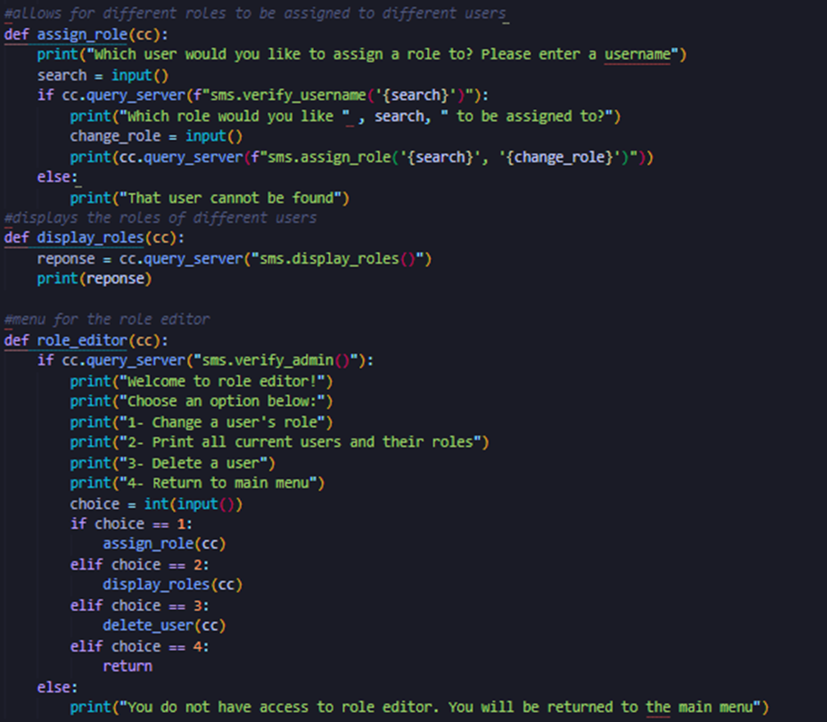

Unit 8 discussion response:
I agreed with the comments of my peers and they seem to have picked up on many of the same issues that I discovered such as TrueCrypt’s discontinuation and the fact that it features unfixed problems that leave it vulnerable to attack.
Seminar Preparation:
I have been working hard on my project and have managed to implement many of the features from the design document for the SMS. Such as adding students and teachers to groups and creating accounts that feature encryption. I found this section of the code challenging in some aspects but also rewarding as I saw some of my ideas and learning in use. This was particularly helpful when it came to the encryption process using Bcrypt as this is something I had not looked into very much before so I was happy that I was able to implement it.
Reading summary:
The evolution of distributed systems towards microservices architecture Article by Tasneem Salah; M. Jamal Zemerly; Chan Yeob Yeun; Mahmoud Al-Qutayri; Yousof Al-Hammadi 12/2016. Summary of key ideas:
• Early systems used a server to handle all tasks. It was simple but had problems like network congestion and high scaling costs.
• Mobile agents moved computation closer to data to reduce network use, but they fell out of favor due to security risks and better networking technologies.
• SOA improved on client-server by making services reusable and loosely connected. However, it was still monolithic and slow to scale.
• Microservices break down large applications into smaller, independent parts, allowing faster updates, better scalability, and easier maintenance.
• Microservices offer more flexibility and scalability than SOA, but they also introduce challenges like complex communication and security concerns.:
• Teams need to carefully manage multiple independent services, ensure security, and coordinate effectively to avoid problems like service failures or inefficiencies.
Reference:
Salah, T. Jamal Zemerly, M. Chan Yeob Yeun, M. Al-Qutayri, M and Al-Hammadi, Y. (2016) The evolution of distributed systems towards microservices architecture. 11th International Conference for Internet Technology and Secured Transactions (ICITST), Barcelona, Spain, 2016, pp. 318-325, DOI: 10.1109/ICITST.2016.7856721.
A Study of the Evolution of Secure Software Development Architectures. Article by Leah Winkfield 2018. Summary of key ideas:
• Early systems would have a client requests data from a central server. It was simple but had limitations like high network traffic and expensive scaling.
• Mobile Agents were created to move computation closer to the data source, but they became less popular due to security concerns and better network technologies.
• Service-Oriented Architecture (SOA improved system design by allowing services to be reused and loosely connected. However, SOA’s reliance on large, monolithic systems made it slow to scale and maintain.
• Microservices break down large applications into small, independent services. They improve scalability, resilience, and speed but require careful coordination and management due to increased complexity.
• Comparison: Microservices are more flexible and scalable than SOA and client-server models but introduce challenges like complex communication and security management.
Reference:
Hoppa, M. Hu, Y. L, Winkfield. (2018) A Study of the Evolution of Secure Software Development Architectures. The Colloquium for Information Systems Security Education. Vol. 6. No.1. Available from: https://cisse.info/journal/index.php/cisse/article/view/86 [Accessed October 1st 2024].
Project update:
This week I continued to add functions to flesh out the project. This included functions to change a user’s role and assign people to classes. I found this bit a little tricky, but I worked it out eventually. For the change to the user’s role option I have decided to lock it behind authorization which I also managed to complete this week. This means that a user cannot change role unless an admin account edits their account. See screen shot below:
